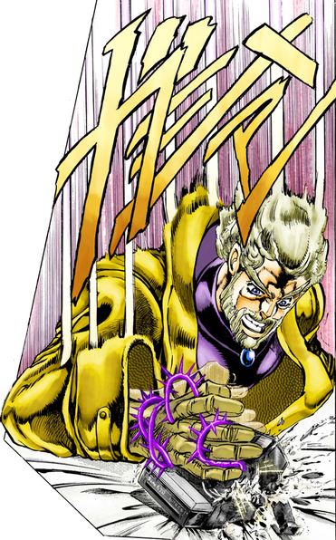
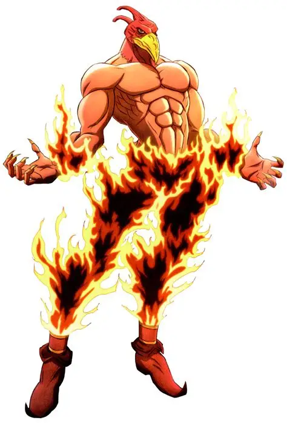
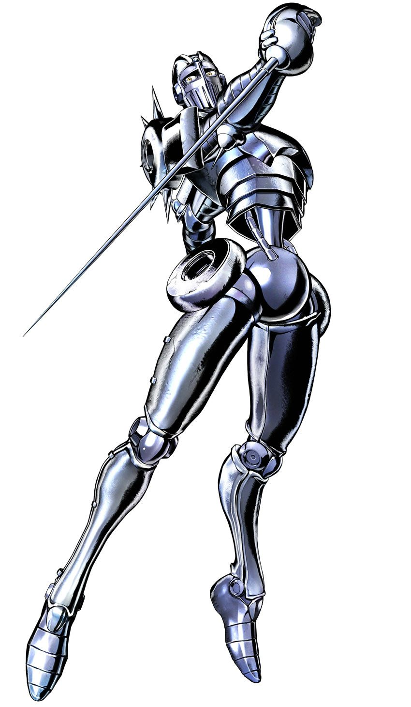

Parte 3: Stardust Crusaders

Sinopsis
Dio Brando regresa tras un siglo en el fondo del mar y el destino de la familia Joestar peligra. Jotaro Kujo, su abuelo Joseph y sus compañeros viajan hasta Egipto para derrotarlo antes de que pasen 50 días.
🎵 Openings
| N.º | Canción | Artista | Año |
|---|---|---|---|
| 1 | STAND PROUD | Jin Hashimoto | 2014 |
| 2 | Sono Chi no Kioku ~end of THE WORLD~ | JO★STARS (TOMMY, Coda, JIN) | 2015 |
▶ Buscar el opening en YouTube
Opening 1: STAND PROUD
Opening 2: Sono Chi no Kioku ~end of THE WORLD~
Personajes
| Imagen | Nombre | Rol | Descripción | Stand |
|---|---|---|---|---|
 | Jotaro Kujo | Protagonista | Serio y fuerte. |  Star Platinum |
 | Joseph Joestar (anciano) | Aliado | Ya mayor, conserva su astucia. |  Hermit Purple |
 | Muhammad Avdol | Aliado | Aliado de gran fuerza. |  Magician's Red |
 | Noriaki Kakyoin | Aliado | Aliado calmado y estratégico. |  Hierophant Green |
 | Jean Pierre Polnareff | Aliado | Espadachín francés. |  Silver Chariot |
 | Dio Brando (Stardust) | Antagonista | Vampiro que detiene el tiempo. |  The World |
Sistema de poder (pulsa para desplegar)
Aquí aparecen por primera vez los Stands, manifestaciones de la energía vital con habilidades únicas. Mira todos en la página de Stands y sus estadísticas en Niveles de poder.
« Parte 2: Battle Tendency | Parte 4: Diamond is Unbreakable »